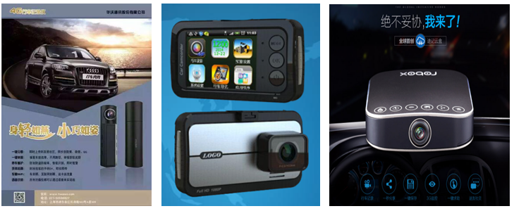
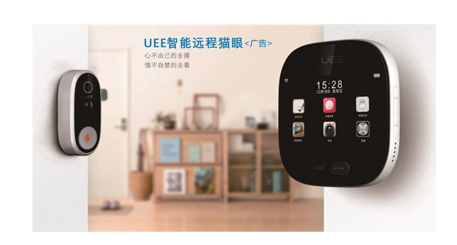

“iChano众云视频”平台介绍
“众云视频”（www.zvcloud.com）是南京云恩通讯科技有限公司研发的一套极具开放性、兼容性、交互性于一体的智慧视频云。
“众云视频”的系统构架由音视频编解码SDK软件、P2P视频连接平台中间件、流媒体转发服务集群、消息推送系统、公有云存储组成，旨在为各种智能设备提供从音视频采集、编码、P2P传输、解码、影像展示、信令控制、云端存储、报警推送、直播录制、智能识别、视频分析、大数据分析等一站式平台解决方案，并进一步提供SDK软件功能定制与APP应用端定制业务。
众云视频”拥有P2P私网穿透软件系统和独创的P2P穿透技术，与TUTK、萤石、大拿、浪涛、技威相比，具有更加丰富，灵活，开放的控制接口，客户可根据自己的需求再做二次开发，开发人员可方便地将我们的软件集成到各种需要通信的设备中。我们提供高效、可靠，处处可达的P2P私网穿透软件，专业为用户解决通信问题。
“众云视频”迄今已与众多品牌客户建立深度合作，其中有奇虎360、中兴通讯（小兴看看）、海思半导体、富瀚微电子、盈方微电子、大疆创新、创维、优必选、萤石、电信悦ME、TCL、新国都、乐视视频、视声电子、狄耐克、迪纳数字等。使用“众云视频”的智能硬件包含：网络摄像机、NVR、行车记录仪、可视对讲、楼宇门禁、智能猫眼、可视门铃、数字机顶盒、智能电视、航拍无人机、智能机器人、网络存储NAS等。
可成熟的应用于智能家居、安防监控、智慧社区、平安城市、智能设备控制、物联网、车联网、传感器数据采集、楼宇可视对讲、连锁店视频互联和移动执法等场景。
“iChano众云视频”平台介绍
基于“众云视频”技术的“掌上看家”APP，连接的设备是市场上通用的移动设备，包括iOS系列（iPhone，iPad，iTouch）和Android设备（Android手机，Android平板，Android电视及Android机顶盒），或个人电脑（Windows系统和苹果的Mac OSX）。用户不需要购置其它任何专业设备，只需下载采集端和观看端APP，即可立即享受专业级实时视频监控与展示。
经过四年的验证、优化和迭代，目前全球有超过1000万的用户（国内外用户占比近一半），掌上看家已成为全球个人用户量最大，口碑最佳的视频监控软件，在苹果App Store和Google Play两个主要市场两年来累计好评为4.5星。
通过这款软件产品，我们不仅对整个“众云视频”的技术进行了大规模的验证，更重要的是我们为视频监控，乃至智能硬件领域探索出一条通过产品运营达到持续盈利的可行方案，为硬件厂商提供宝贵的运营经验和持续盈利模式，使其能够摆脱单纯靠硬件销售盈利的模式，逐渐转变为以运营用户为核心的互联网盈利模式。（注：目前掌上看家的产品付费率为3%左右，其中重复付费率为50%，并且平均每次用户付费可贡献将近50元。）
“iChano众云视频”平台特色
高品质的P2P视频连接平台（超稳定，低延时，高并发）
支持全平台跨系统的SDK（Android、iOS、Linux、Windows\OCX、Mac OS、ARM、MIPS、RTOS）
iChano众云视频”SDK功能清单：
1、实时视频传输
2、码流动态切换
3、双向音频传输 （支持回声消除）
4、远程回看录制视频
5、远程获取视频截屏
6、定制录制
7、报警录制
8、观看端录制
9、观看端截屏
10、码流切换控制
11、平移和旋转
12、自定义操控指令
13、文件推送
14、移动侦测报警
15、传感器侦测报警
16、局域网搜索
17、纯局域网模式
18、支持苹果IPV6审核发布
配套服务清单：
1、提供“众云IPC监控”、“众云门铃”、“众云猫眼”、“众云4G行车记录仪”中性版APP及换肤服务
2、可提供基于业务主线的APP深度定制服务
3、可对APP应用层UI进行设计及定制开发，可开放UI层代码
4、可提供IOS版本商店发布
5、可提供推送报警服务
6、可提供社交分享平台
7、可提供Android系统休眠唤醒方案(低功耗模式)
8、可提供报警视频云存储
9、可提供报警图片云存储
10、支持云上传接口（支持上传指定的录像文件）
11、对接支付结算系统 （支付宝、微信、银行卡支付，配合云服务使用）
12、支持智能识别 (人脸检测、周界侦测、客流统计等)
13、支持设备数据分析管理后台 （即将发布）
“iChano众云视频”研发规模
南京云恩通讯科技有限公司本部研发团队约50人，在深圳设有分公司，核心研发来自华为与联想移动，服务器系统工程师搭建过分布全球稳定运行5年的支持千万用户访问的流媒体服务集群系统，应用研发工程师具备平均6~8年安卓或iOS平台研发经验，可以解决安卓平台碎片化导致的各种疑难杂症。
南京公司
深圳公司
“iChano众云视频”服务器部署情况
“iChano众云视频”在全球部署超过200台视频转发集群服务器，全球互联互通。
目前众云视频云平台分国内国外两个大的域运营，以后会根据域中用户情况，进行跟多域的划分。域管理是易伸缩、易扩容的稳定级联架构，可以随时根据负载和域扩张进行域拆分和域扩展。
针对国内互联网3大运营商和众多小区宽带以及国内家庭网络复杂的情形，国内部署了8个物理主机机房和2个云主机服务商的网络。其中主要业务处理中心部署在北京亦庄联通机房、北京奥运BGP多线机房和宁波电信机房。增设了北京三元桥BGP机房、三元桥移动机房、酒仙桥BGP多线机房、鹏博士小区宽带机房等路由接入点，以及众多阿里云、腾讯云云主机用来做多媒体媒体带宽分布处理。
与国内网络环境相比，国外网络相对较为稳定。首先家庭网络可以打通率高达95%以上，其次国外IDC机房带宽都是100M和1000M的专线，所以国外只部署了4个IDC点来做容灾备份以及网络路由覆盖处理。
“iChano众云视频”友商对比
“iChano众云视频”平台业务流程
系统业务流程，除了鉴权认证服务为必须顺序执行外，其余的服务接入和业务处理都是独立开来的服务体系。
这种离散的业务体系架构有非常明显的优势：
①服务独立使得每个服务都以较小的单元执行，稳定性强;
②服务不依赖更有利于服务的独立开发，可扩展性强;
③服务离散分布和服务独立处理使得服务容灾备份更加容易操作，且当服务出现不可抗力上的损毁时，只影响单独的某个服务，而不至于导致整个平台损坏的灾难。
“iChano众云视频”目标客户
对品质有较高要求的智能硬件领域芯片商\方案商\生产商\互联网公司等。
智能硬件的产品形态包括：
网络摄像头IPCam （已众多消费类IPC方案商、生产商建立合作）
硬盘录像机NVR
远程可视门铃/智能猫眼（已与UEE、巨龙、乐视等建立合作）
楼宇门禁/可视对讲（已与狄耐克、视声电子、易家科技建立合作）
4G行车记录仪（已被迪纳数字、华沃、喵星科技、展帆科技等采用）
智能服务机器人（已被优必选，公子小白，芸众科技采用）
航拍无人机 （已与大疆创新，习疆科技建立4G无线图传方案合作）
数字机顶盒/智能电视（已与TCL、创维、电信悦ME、声宝建立合作）

家庭网络存储器（NAS）
“iChano众云视频”主要产品线
SDK软件开发包
面向有自主软件研发能力的客户
交付清单：
SDK开发包（IOS/Android/Windows/OCX/Linux,etc）
SDK功能清单
Demo参考代码
SDK 3分钟快速集成文档
SDK功能接口的详细说明文档
专门的工程师技术支持
众云SDK CID License授权价格
客户可以从管理后台免费获得10个license进行测试之用，同时可以额外申请100个免费license，但这100个免费license不允许商业化，有使用期限（初定1个月），如果在此期间下单，则这110个license将永久赠送给客户，否则到期作废。
P2P+流媒体服务器集群软件
面向有自主搭建P2P+流媒体服务器集群部署需求能力的客户
交付清单：
众云监控 / 可视门铃 / 4G行车记录仪 / 可视猫眼 中性版APP软件
面向有APP软件需求的客户
“iChano众云视频” 核心解决方案
网络摄像头解决方案
面向IPC行业需要快速产品化的客户，提供软硬件一体化方案或软件平台方案

交付清单：
1.如果客户需要IPC硬件模组+P2P+监控中性版APP+云存储一整套方案（类似技威模式）
我们提供：
1).富瀚（仰歌FH8810）或海思3518E的IPC硬件模组方案
2).众云P2P平台，收取采集端SDK的CID license授权费用
3).众云IPC监控中性版APP，可支持换logo、换肤，或深度定制
4).报警侦测或定时录制视频、图片云端存储，免费对接，云存储收益分成
功能清单（特色功能：用户系统，报警推送，云端存储，指令控制，外接传感器，OCX插件）
专门的工程师技术支持
2.如果客户自有IPC硬件方案，有APP研发能力，需要采集端SDK与APP端SDK
我们提供：
1).可快速集成的设备采集端SDK（Linux，支持由客户提供toolchain，我们负责集成，或者我们提供SDK，客户自行集成）
3.如果客户自有IPC硬件方案，无APP研发能力，需要SDK+P2P+监控中性版APP
我们提供：
1).众云IPC监控中性版APP（IOS/Android/Windows/OCX），可支持换logo、换肤，或深度定制
2).众云P2P平台，收取采集端SDK的CID license授权费用
3).报警侦测或定时录制视频、图片云端存储，免费对接，云存储收益分成
功能清单（特色功能：用户系统，报警推送，云端存储，指令控制，外接传感器，OCX插件）
专门的工程师技术支持
360°全景矫正算法解决方案
面向IPC行业需要快速产品化的客户，提供360°全景矫正后端算法（球面、圆柱等多种特效，画面拼接质量高），正在NVR内集成360°全景影像。
智能猫眼解决方案
面向智能猫眼行业需要快速产品化的客户
交付清单：
1、如果客户需要基于安卓的智能猫眼整机+P2P+猫眼中性版APP+云存储一整套方案
我们提供：
1).MTK安卓猫眼整机，可OEM
2).众云P2P平台，收取采集端SDK的CID license授权费用
3).众云猫眼中性版APP，可支持换logo、换肤，或深度定制
4).报警、访客日志图片云端存储，免费对接，云存储收益分成
2、如果客户已有安卓的智能猫眼硬件，需要P2P+猫眼中性版APP+云存储
我们提供：
1).众云P2P平台，收取采集端SDK的CID license授权费用
2).众云猫眼中性版APP，可支持换logo、换肤，或深度定制
3).报警、访客日志图片云端存储，免费对接，云存储收益分成
远程可视门铃解决方案
面向远程可视门铃行业需要快速产品化的客户
由低功耗可视门铃与室内叮咚中继器组成（图片为手模）
交付清单：
1、如果客户需要海思Lite OS低功耗方案门铃+P2P+门铃中性版APP+云存储一整套方案
我们提供：
1).海思Lite OS低功耗门铃硬件方案，也可OEM整机/p>
2).众云P2P平台，收取采集端小系统SDK的CID license授权费用
3).众云可视门铃APP中性版本，可支持换logo、换肤，或深度定制
4).报警、访客日志图片云端存储，免费对接，云存储收益分成
功能清单（特色功能：访客日志，休眠唤醒，图片/视频云端存储，SOS）
专门的工程师技术支持
2、如果客户已有Linux/Android/RTOS小系统门铃硬件方案，需要P2P+门铃中性版APP+云存储
我们提供：
1).经评估技术可行性及SDK植入后，与Linux/Android/RTOS门铃硬件方案商进行软件对接，共同联调
2).提供众云P2P平台，收取采集端小系统SDK的CID license授权费用
3).众云可视门铃APP中性版本，可支持换logo、换肤，或深度定制
4).报警、访客日志图片云端存储，免费对接，云存储收益分成
功能清单（特色功能：访客日志，休眠唤醒，图片/视频云端存储，SOS）
专门的工程师技术支持
4G行车记录仪解决方案
面向4G行车记录仪行业需要快速产品化的客户
交付清单：
1、设备采集端SDK快速集成（Linux/Android，支持由客户提供toolchain，我们负责集成，或者我们提供SDK，客户自行集成）
1).众云P2P平台，收取采集端SDK的CID license授权费用
2).众云4G行车记录仪APP中性版本，可支持换logo、换肤，或深度定制
3).报警图片云端存储，集成位置信息，地图展示，社交分享，视频直播
功能清单（特色功能：循环录制，报警录制，录像锁定，位置信息，地图展示，社交/分享，直播）
专门的工程师技术支持
典型客户与合作伙伴
公司介绍
南京云恩通讯科技有限公司由许占博士回国后创立，专注于为各类智能设备提供开放的实时视频连接和存储分析服务。公司于2012年在南京江宁经济技术开发区注册成立，是南京市重点引进321人才企业，高新技术企业与双软企业，现有正式员工50余人，以博士、硕士为主。
公司研发的“众云视频”连接平台，为众多智能设备提供开放的实时视频连接和存储分析服务。全球激活设备超过1000万（超过50%在国外），对接各类智能设备几十种，全球搭建13个服务器集群。“众云视频”面向于智能家居，物联网，车联网，无人机直播等领域的各种智能设备商，提供从音视频编码传输到存储分析的一站式解决方案，包括可视门铃，家用机器人，航拍无人机，网络摄像机，3G/4G车载记录仪，智能汽车后视镜等。每时每刻全球几十万摄像镜头同时提供视频传输，云端存储和智能分析等服务 。
“众云视频”通过各类智能设备的接入，为合作伙伴提供业务后台支撑，其中上市公司客户包括中兴通讯，奇虎360，盈方微，上海富翰，北京君正，台湾声宝，新国都，易家科技股份，香港PC Partner, 菲律宾最大运营商PLDT，广东省移动，中国电信智能交通基地，江苏电信鸿信公司，中国移动物联网基地，TCL等，以及新兴的行业领头公司如优必选（机器人），大疆创新，阿凡达机器人等。
我们的愿景是成为物联网领域的视频运营服务商。
创始人介绍
许占，董事长兼总经理，清华大学计算机系本科及硕士，加拿大里贾纳大学计算机系博士，主攻计算机图像处理及理解，视频压缩及网络传输。
2005年在加拿大Teradici公司研发的远程桌面视频编解码算法PCoIP，已被国际知名企业VMware和Amazon采用并用它作为其唯一远程连接协议。曾领导创业公司在加拿大上市，并获加拿大十大华裔高科技杰出人才奖和加拿大国会颁发的科技杰出人才奖。
2012年参与投资创办南京熙健“掌上心电”项目并任董事长，先后获创新工场 2000万A轮，先声药业4000万B轮投资后退出。随后创办的云恩通讯科技有限公司，是南京市321重点工程示范单位，江苏省“双创”重点扶持企业。
众云视频合作联系方式
南京云恩通讯科技有限公司
地址：南京市雨花台区花神大道23号5号楼107室
电话：025-84986658
邮箱：business@ichano.com
南京云恩通讯科技有限公司深圳分公司
地址：深圳市南山区科华路3号 讯美科技广场3号楼13楼1323室
商务联系人：
王靖 18913924488 微信：wangliqing0527 邮箱：jing.wang@ichano.com
陈汉 15258032980 微信：chenhanwoo 邮箱：han.chen@ichano.com
技术支持：
张晓海 15062287872 微信：xiaohai_nj 邮箱：xiaohai.zhang@ichano.com
市场合作：
胡珏峰 13813851993 微信：jewenhu 邮箱：juefeng.hu@ichano.com
增值业务合作:
孙国勇 18551640997 微信：anengsun 邮箱：guoyong.sun@ichano.com